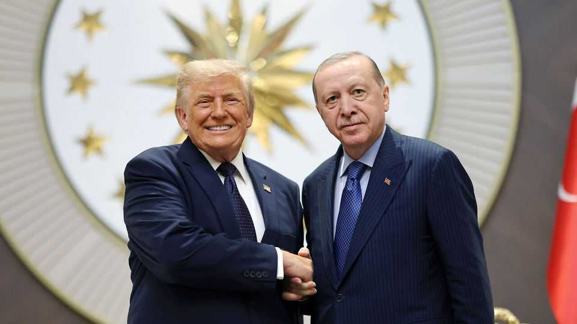

NATO survives its bipolar summit
Allies breath a sigh of relief; Ukraine may even cheer
July 9th 2026

DONALD TRUMP came to insult NATO, not to bury it. He arrived in Ankara for the alliance’s annual summit threatening to withdraw American troops from Europe unless he got Greenland, a Danish territory. He repeatedly said he was “not happy” with allies for failing to help with his war in Iran, and vowed to sever trade with Spain. Yet by the time he left he was waxing about the “tremendous love” among allies.
For those who feared the summit could bring a potentially catastrophic break-up of NATO, the happy parting is a relief. Mr Trump signed up to a joint declaration that reaffirmed NATO’s “ironclad commitment to our collective defence” including Article 5, which holds that “an attack on one is an attack on all”. Even so, Mr Trump’s declaration of affection will seem, to many Europeans, akin to the love of a wife-beater.
Another crisis will surely come. As one European official put it, Mr Trump’s commitment helps to preserve deterrence against Russia, “but we cannot be naive”. The Pentagon, having cut both front-line troops in Eastern Europe and the backup forces it promises to send to reinforce NATO in any war, is conducting a six-month review that may yet bring more reductions. Pete Hegseth, the secretary of war, is thought to have wanted to withdraw all troops, but was checked by Marco Rubio, the secretary of state. Moreover, the resumption of hostilities with Iran may keep stoking Mr Trump’s resentment at Europeans’ refusal to join the fight.
Even so, with every bust-up averted, Europeans buy a bit more time to strengthen their defences. And they are. Britain will lead a 12-country, $50bn European initiative to develop missiles able to hit targets 2,000km away. These are a replacement for the deep-strike ones Mr Trump has been withholding, though Germany also struck a deal to buy American Tomahawk missiles. Other contract announcements showed that Europeans are trying to fill the gaps in “enablers” provided by America, for instance mid-air refuelling aircraft and long-range drones; they also served to tell Mr Trump that American firms had much to gain by keeping close to Europe.
Ukraine’s ability to fend off Russia’s invading army, and to inflict palpable damage far behind the front lines, is also buying vital time for Europeans. Volodymyr Zelensky, Ukraine’s president, emerged as one of the winners from the summit. Mr Trump once told him he had “no cards” and threw him out of the Oval Office. Now he promises to give him an ace: a licence to make desperately needed Patriot interceptors, the only weapons Ukraine has that can shoot down Russian ballistic and hypersonic missiles. Ukraine failed to intercept any of the 29 missiles Russia fired on July 6th, killing 28 people in and around Kyiv. The licence is no quick fix, even if it goes ahead. Getting production up and running will be a long process.
Mr Trump seemed to give Mr Zelensky the nod of approval for Ukraine’s strikes against Russian oil facilities and other targets that are bringing the war to Moscow and St Petersburg. J.D. Vance, America’s vice-president, had urged Ukraine to be “maximally defensive”, but Mr Trump suggested long-distance strikes could bring Russia to the negotiating table. “It’s an escalation, but it’s also an escalation that can help lead to an end,” said Mr Trump.
Mr Trump’s marked friendliness towards Mr Zelensky, think some, may be a sign that he now regards Ukraine’s president as a fighter and a winner. “It’s hard to believe, right?” Mr Trump told reporters. “From the Oval Office to now, I think we’ve developed a very good relationship.” Mr Trump is mercurial, however. His next conversation with Mr Putin may yet steer him closer to the Kremlin’s viewpoint.
Another winner from the summit was its host, Recep Tayyip Erdogan, Turkey’s strongman president. Ahead of the summit, Turkish officials had privately said just getting Mr Trump to show up would count as success. He did, and came bearing gifts. He suggested he would move ahead with the sale of F-35 fighters to Turkey, which America had blocked in 2020 after Mr Erdogan purchased an S-400 air-defence system from Russia. He also promised to roll back CAATSA sanctions the US had imposed the same year against Turkey’s defence-procurement agency.
Congress says America can provide Turkey with the F-35s only when the latter “no longer possesses” the Russian air defence batteries. Even so, the prospect of a breakthrough seems closer, despite the objections of Binyamin Netanyahu, Israel’s prime minister, who warned that selling Turkey the jets would “destroy the power balance in the Middle East”.
Having salvaged the summit, and in many ways done better than expected, the allies are in no rush to repeat the experience. The next one is set to take place in Albania, but the leaders pointedly did not give a date. Some think they should henceforth be held every two years, rather than yearly. The fewer get-togethers with Mr Trump, they argue, the fewer the chances of a family meltdown. ■
To stay on top of the biggest European stories, sign up to Café Europa, our weekly subscriber-only newsletter.